Definicija
Pravci  i 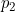 su mimosmjerni jer se ne sijeku i nisu paralelni. Pravac siječe i okomit je na oba mimosmjerna pravca.
i 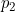 su mimosmjerni jer se ne sijeku i nisu paralelni. Pravac siječe i okomit je na oba mimosmjerna pravca.
Paralelne ravnine
Mimosmjerni pravci i leže u paralelnim ravninama 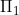 i .
Paralelni pravci
Pravac 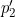 prolazi nekom točkom 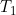 pravca i 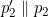 . Pravac 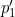 prolazi nekom točkom 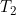 pravca i 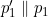 .
Zajednička normala
Zajednička normala pravaca i je presjek ravnina i 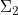.
Paralelepiped
Paralelepiped preko kojeg se izvodi formula 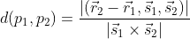